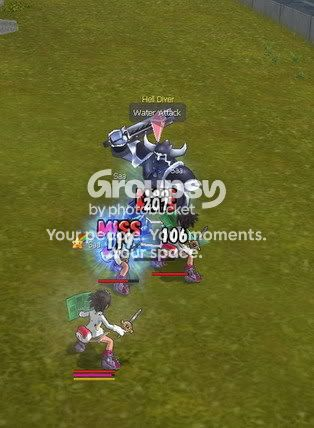
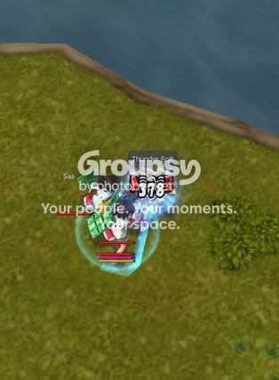

มีเรื่องอยากถามค่ะ
แอสจะอัพเอจิให้a.spdถึง800เลยจะดีรึเปล่าคะ แล้วควรลงvitมั่งรึเปล่าคะ
แอสจะอัพเอจิให้a.spdถึง800เลยจะดีรึเปล่าคะ แล้วควรลงvitมั่งรึเปล่าคะ
http://eco.froztic.in.th/archive/ecofanclub/
http://eco.froztic.in.th/archive/ecofanclub/viewtopic.php?f=14&t=14453
kungpotter เขียน:1.>>เวล 52 เก็บไหนดีอ่าคับ สายกรงเล็บน๊า~*
2.>>แล้วก Toxin มันหาได้จากไหนเหยอคับ พอดีกดสกิลพิษ มิได้อ่ะ
3.>>สกิลที่มันบอกว่าต้องใช้ Toxin นี่ ตกลงมันใช้จิงป่าวอ่ะคับ
4.>> ขอบพระคุณมากมายคับผม__..~*
poa123 เขียน:รบกวนถามไรหน่อยนะครับ
ใครมีสนับ80เหลือ หรือมีคนรู้จักพอที่ขายให้ผมบ้างป่าวครับ เป็นsharp fang ก็ได้ครับ
ใครมีmailมาก็ได้ครับ server takoyakiนะครับ ชื่อ FuRbY เดี๋ยวเมลกลับคับผม
ป.ล.ผมเห็นมีคนขาย1.7m ไม่รู้แพงรึป่าว
ป.ล.2ความจริงควรอยู่ในบอร์ดซื้อขาย ก็ขอโทษด้วยนะครับ ผมคิดว่าตรงนี้มันคนอาชีพเดียวกันน่าจะหาง่ายกว่า
Bird Kungz เขียน:มีใครลง pvp เล่นสายมีด+ซัดเด้นมั่งมั๊ย
เหนมีน้อยมาก สายนี้
ส่วนใหญ่เห็นแต่พิษกับสนับ
*-*

